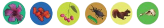

Explorando la Riqueza Natural de Boyacá y Cundinamarca
Descubre la fascinante diversidad biológica que albergan los departamentos de Boyacá y Cundinamarca,
ubicadas en el corazón de los Andes colombianos. Nuestro portal web se dedica a explorar y compartir
la impresionante variedad de flora y fauna que habita en estos territorios, destacando su importancia
ecológica, cultural y económica.
Ya seas un estudiante, un investigador, un ecoturista o simplemente un amante de la naturaleza, encontrarás en
nuestro portal información valiosa y actualizada que te ayudará a comprender la complejidad y la belleza de la
biodiversidad de Boyacá y Cundinamarca.
11 de septiembre: Día Nacional de la Biodiversidad en Colombia

El Día Nacional de la Biodiversidad se celebra para recordar al Sabio José Celestino Mutis,
quien murió el 11 de septiembre de 1808 y quien con la Expedición Botánica dejó una significativa colección de
plantas que son una notable base para el inventario nacional de biodiversidad.
La biodiversidad comprende los distintos tipos de vida que se pueden encontrar en un área: la variedad de
animales, plantas, hongos e incluso microorganismos como bacterias que conforman nuestro mundo natural. Cada
una de estas especies y organismos trabajan conjuntamente en los ecosistemas -como una red- manteniendo el
equilibrio y la vida.
Es por esto que les queremos contar que la Universidad Distrital alberga más de 14 especies de
aves residentes y migratorias boreales, innumerables especies de insectos y cuenta con un
patrimonio forestal de más de 2.100 especies entre arbustos, árboles y palmas.
Así mismo, desde el Sistema de Gestión Ambiental se han realizado actividades como siembras de árboles,
limpieza de cuerpos hídricos, actividades de sensibilización y educación junto con diferentes integrantes de
la comunidad universitaria, todo en pro de cuidar la biodiversidad con la que cuentan las diferentes sedes de
la Universidad.
Fuentes:
https://www.worldwildlife.org/descubre-wwf/historias/que-es-la-biodiversidad
https://www.minambiente.gov.co/index.php/component/content/article?id=930:el-uso-soste
© 2024 www.Bio_CundiBoyacense.com